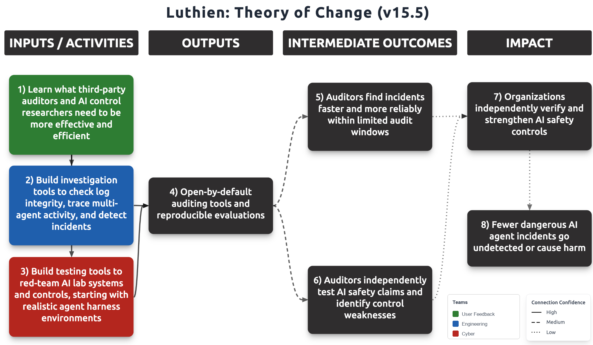

This is our current theory of change. Our 2025 theory of change focused on turning Redwood Research's AI control agenda into production software for developers. If you think our logic, assumptions or claims are weak, we welcome constructive feedback at scott@luthienresearch.org.
Mission
Our mission is to give auditors, both internal and third-party, and AI safety/security researchers superior tools to understand AI agent activity, identify harmful or misaligned behavior, and assess whether control measures are good enough to prevent harm. Our tools are open by default, designed to run in the user's own environment, and work for time-constrained audits.
Our work addresses two problems: investigation and testing. For investigation, we build tools to analyze agent activity, verify log integrity, and identify harmful behavior. For testing, we build tools to red-team AI lab systems and controls in realistic deployment environments, allowing auditors to assess whether safety controls work.
We will develop these capabilities with direct feedback from auditors (e.g., Faculty) and AI control researchers (e.g., Redwood Research). Over time, we aim to improve agent incident detection and measure how well controls perform across labs and models.
Problems
For investigation: it is difficult to reliably work out what agents did. The evidence is too large, split across coordinating swarms of agents, sometimes deliberately obscured, and possibly incomplete or altered. So when misalignment or an incident is suspected, an auditor can't confidently say within the time they have to investigate whether an incident happened or how serious it was.
For testing: control evaluations don't reflect how agents are deployed inside the labs. They run outside a realistic deployment/harness environment. Additionally, sabotage examples are either too obvious or too harmless. These limitations cannot show the auditor whether the controls would catch a real attack/incident, and controls appear stronger than they actually are.
Impact Strategy
Agile Approach
Building the right thing is at least as important as building the thing right. We use a combination of the Learn More Faster method and 4-week project sprints with weekly feedback from the project's customer. Anyone on the team can propose a project in a short written brief (template) or join one that is already underway. We expect about two projects to be in progress at any given time. We're currently in the process of debating each idea to red-team it and build on each other's ideas. Next, we'll pick projects on five criteria: a single clear focus, ambition, speed, grounding in what users tell us they need, and a link to a specific threat in our threat model. The fifth criterion means each brief states the credible threat it addresses and the evidence that shows the threat is realistic, so we build first for failures that have already happened or would cause the most harm. Each sprint runs on daily standups and regular backlog grooming. It ends with a review where users try the work, and we decide whether to improve it, pivot, stop or scale. Many teams adopt the rituals of agile but still plan like waterfall (Cagan). We have the experience to effectively run agile scrum teams. We publish our methods, results and code openly, so independent AI safety researchers and developers can build on our work and multiply what a small team can do.
First Projects
Four briefs are the leading candidates for our first sprints. Two address investigation, one addresses testing, and the threat model guides what the other three look for.
Auditor tooling (investigation). We will measure which ways of presenting agent logs, chain of thought, and tool calls help an auditor catch sabotage most often, using Redwood's Auditing Sabotage Bench as the answer key, and publish the results on the Control Tower leaderboard.
Rogue incident detection (investigation). We will turn the methods Asymmetric Security, Transluce, Nightingale, and SwarmTraces used to find rogue agent activity in public records into automated detections, so auditors have evidence of an incident that does not depend on what the Lab provides.
Harness red-teaming (testing). We will build a kit that runs Redwood's harness attacks against Claude Code and Codex across real configurations, such as sandbox on and off, and reports which attacks got past the safeguards and which setting would have stopped them, building on Jurgis Kemeklis's work.
Loss of control threat model for Lab auditors. We will place every Lab incident disclosed in 2026 on a severity scale and list, for each level that has occurred, three to five checks an auditor should run, each drawn from a failure seen in a real incident.
Founding Team
Our founding team, advisors and investors are on the Luthien home page.
Theory of Change Diagram

Threat model
We focus on cases where an AI agent, or a group of coordinating agents, is itself the threat actor. Its goal may come from reward hacking, from instructions injected by an outside attacker, or from emergent goals. The harms we are most concerned with are sabotage of assigned work, especially safety research, and major social disruption caused by rogue model manipulation of AI Lab, customer, or third-party systems. Agents can conceal these actions by splitting an attack across agents so monitors watching one agent at a time see nothing suspicious, by spreading small harms across a long trajectory, by obfuscating the harmful steps, and by deleting or rewriting their own logs. The AI Labs incidents disclosed in 2026 were largely low severity but we will focus on building tools that mitigate higher severity threats from rogue agent swarms.
Broad Applicability
Our work applies to both closed-source and open-source models. Organizations using open-source models need to be able to measure actual harm during deployment rather than relying only on evaluations done by the model provider. The long-term vision, complementing Faculty's, is a much more comprehensive embedded evaluation regime covering dangerous capabilities, misuse areas, and the different stages of the model development life cycle.
Relationship to Project Tailwind
Our work complements several Project Tailwind initiatives, particularly Control Red Team and Independent AI Auditors, as well as Threat Modeling Institute, AI Incident Investigations, and Frontier Lab Accountability. Threat modeling identifies potential risks, control red-teaming tests whether safeguards work, and auditor tooling helps investigate incidents and independently verify AI safety claims. Findings from audits and investigations can then inform threat modeling and improve future evaluations.
How We Will Measure Success
We will judge our work by whether auditors and control researchers use it and whether it makes their findings faster and more reliable. For investigation, we will measure how much faster and more accurately auditors can establish what happened in an incident when they use our tools, compared with today's baseline, in which METR's Hugging Face investigation took three people six days and about $400,000 in API credits. For testing, we will measure how often our tools catch attacks on benchmarks with known answers. We will also track how many auditor and research organizations use our tools in their own work.
Arguments Against Our Proposal
Ecosystem Risks
- Labs, auditors, or their safety research agents will build these tools themselves. Frontier AI Labs have strong reasons to build auditing and monitoring tools, and Anthropic already uses an internal hierarchical summarization tool in the second stage of its monitoring pipeline.1 Auditors may also build their own, and coding agents make this easier every few months, so an auditor using Claude Code or Codex can already build a working log parser or transcript search tool in a few hours. Two things limit this risk. A Lab's internal tools are built for its own use, and an auditor checking that Lab's safety claims cannot rely on the Lab's tools to do it. And a script written during a time-limited audit has not been tested against known incidents, so the auditor cannot say how many attacks it would miss, and a Lab disputing the findings can point that out. Knowing what to look for also comes from tracking how rogue agents have actually behaved, which a coding agent does not supply on its own. Redwood, the group closest to this work, is not planning to fill the gap; Tyler Tracy has said Redwood is not necessarily good at building products and sits "higher up the funnel."
- Mitigation: We will focus on detections based on documented rogue agent behavior and on benchmarks with known answers that measure how often a tool catches an incident, because neither gets cheaper as coding agents improve. We will release these as components that auditors and their coding agents can call, so an auditor who writes their own tool can still use our detections and test it against our benchmarks. We will keep the regular meetings and Slack contact we already have with auditor, Lab, and safety researcher teams, and at each sprint review we will ask whether the auditor used our tool or wrote their own. If they consistently write their own, we will stop
- It's too hard to predict what will be needed. Building the right tools depends on fast feedback from users or from real agent logs. Auditors may be under tight time pressure, potentially limiting time to provide feedback. Also, auditors may not be able to share unredacted logs, and if we can only test our tools by handing them to auditors and waiting, each improvement could take months instead of days or weeks. Auditors may then switch to tools they build internally, which they can change more quickly.
- Mitigation: We will generate our own realistic test data so we can iterate without waiting on auditors. A member of our team built rogue internal deployment environments for Redwood Research in which agents inside a simulated AI Lab pursue covert objectives, including stripping suspicious actions from their own transcripts, and we will use the same approach to produce logs with planted incidents whose correct answers we know. We will add the public datasets of rogue agent activity released by Nightingale, Transluce, SwarmTraces, and Asymmetric Security, along with trajectories from Redwood's LinuxArena and Control Tower runs, which Scott already contributes to. The same data becomes the benchmark we use to measure how well our tools work. For real logs, our tools run in the auditor's own environment, so auditors can test them on data they cannot share and tell us what the tools caught and missed. The paid engagement we are exploring with Faculty.ai would add direct feedback from embedded evaluations under Faculty's confidentiality terms.
- Over-investment in safety tech. At ControlConf 2026, Buck Shlegeris argued in his opening remarks that safety budget, not safety tech, may be the main constraint: people are "massively over-investing in things related to pushing out the tech Pareto frontier." The priority should instead be mechanisms that reduce safety washing and lax control measures inside AI companies, such as external risk evaluation and standards.
- Mitigation: We agree, and see open-by-default tooling as a way to support exactly those mechanisms: it gives auditors and researchers a yardstick for evaluating a lab's safety claims. As Buck put it, "I don't do the reducing risk, I just do the measuring risk."
Organizational Risks
- Credibility. Broad impact requires our initial auditors' credibility to show the tools are effective and safe to run.
- Mitigation: Get auditors to independently validate our tools and publicly share results where possible.
- Security. The open-source core invites attacks from hackers and AI agents, which could also study the code to evade detection.
- Mitigation: Keep detection algorithms and rules proprietary, and vet contributors and code changes.
- Adoption. Tools proven useful with a few auditors may not achieve broader adoption.
- Mitigation: Find and test the most trusted, cost-effective channels to CSOs for broader adoption.
- People. High churn in AI, with "mercenaries" chasing top salaries, means we may lose people as more companies in this space get funded.
- Mitigation: Recruit mission-driven people, deliver meaningful impact to retain, monitor retention risk.
Work to Date
Phase 1: Jan 2025 to May 2026 (Luthien V1)
Luthien was founded by Jai Dhyani during Catalyze's Winter 2024/25 AI Safety Incubation Program to apply Redwood's AI Control research to real-world coding agents, and Scott joined as co-founder in May 2025.
The initial focus was the Luthien proxy, and we built four iterations, spoke with developers from 93 organizations, conducted 74 in-depth conversations, and ran 14 live trials. We got one paying customer, Trajectory Labs, which maintains a public fork of our proxy.
The proxy development and user trials provided valuable lessons about the challenges of integrating with coding agents and what drives adoption. The work helped establish relationships with Redwood Research and others, leading us to shift our target users from general developers to AI control researchers and toward independent auditors.
Phase 2: June 2026 to Current (Luthien V2)
Since June, Scott has been working closely with Redwood Research, particularly Tyler Tracy, on control tooling to automate risk reports. This includes contributions to Control Tower, its leaderboard, onboarding, and documentation.
We've also developed relationships with other researchers, including Jurgis Kemeklis, and third-party auditors such as Faculty. Faculty identified specific gaps in cyber alignment evaluations and incident investigations where AI agents are the threat actors, and expressed interest in bringing in partners. We're exploring a paid subcontracting engagement to support their embedded evaluations.
These engagements have given us concrete feedback on the problems auditors face and the limitations of current tools, especially as AI agents become more capable (e.g., agent swarms and small harms accumulating across longer trajectories).
- Anthropic, Risk Report: August 2026 (redacted public version), p. 77: "Second-stage pipelines for both monitors, filtering out common sources of false positives and using a hierarchical summarization tool to surface the most concerning actions to AI control researchers." ↑